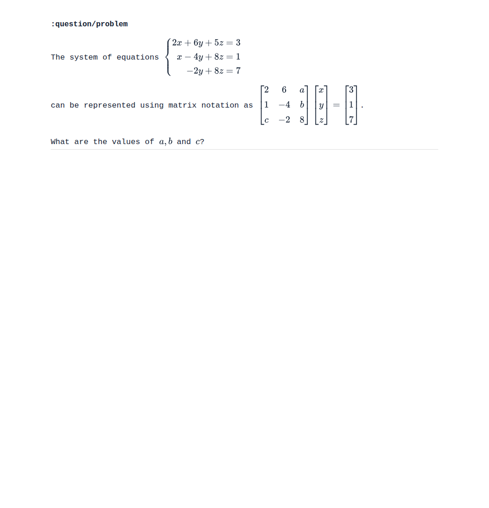
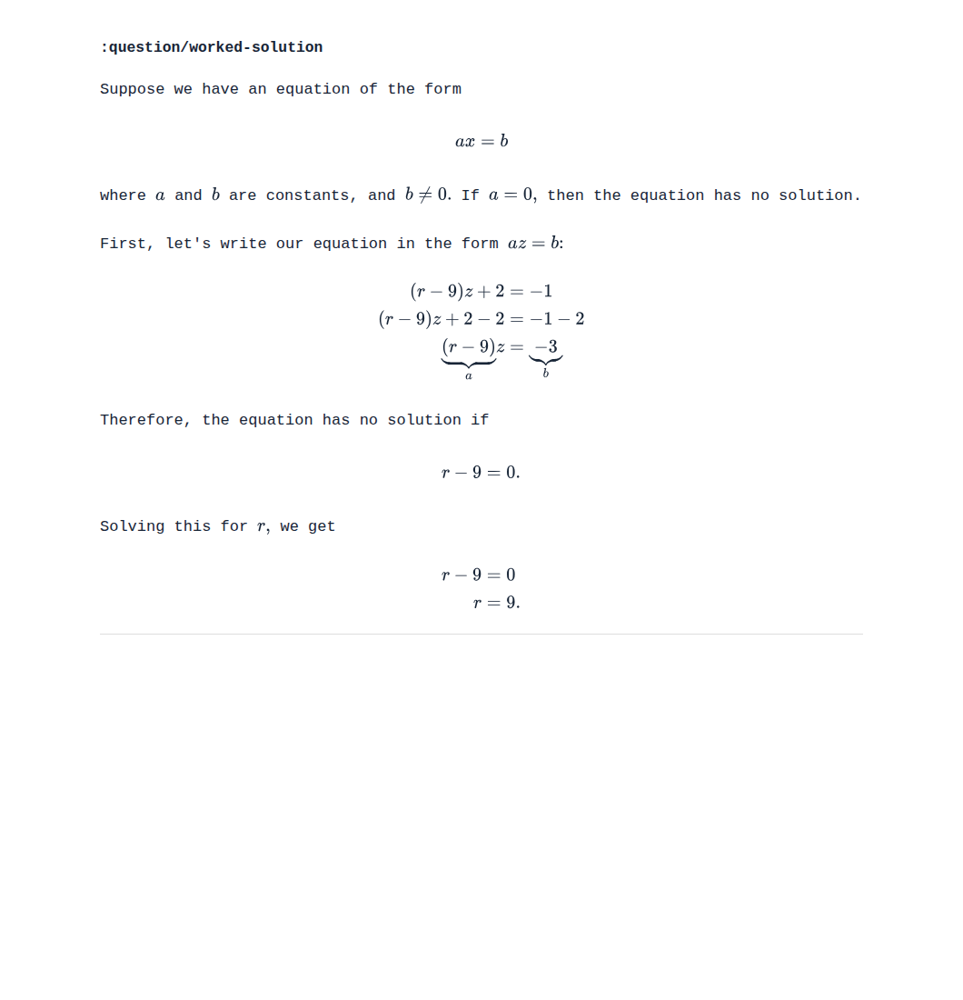

Saved at database basis 3084. All 10 recent linear algebra learner-target additions were checked: 28 KPs, 336 questions and examples, 20 tutorials, and 2,068 content fields.
113 fields repaired across 99 entities. Standardized matrix layouts and equation systems, converted 44 formula images to LaTeX, repaired 24 underbrace fragments and two coordinate prompts, and separated one answer label from its preceding sentence. Six genuine diagrams are preserved.
All 2,068 fields render without detected raw TeX, unsupported commands, math errors, or unintended code blocks. Ten inline-answer questions passed desktop and mobile checks (40 controls). Every saved edit matches the reviewed content exactly; the receipt contains only the intended content replacements. Missing solutions and answer keys were not added.
| Topic | Questions/examples | Fields repaired |
|---|---|---|
Consistency and Dependency in Linear Systems17592186048343 | 24 | 7 |
Solving 3x3 Systems of Equations Using Gaussian Elimination17592186049058 | 25 | 5 |
Representing 3x3 Systems of Equations Using a Matrix Product17592186049151 | 36 | 12 |
Linear Equations With Infinitely Many Solutions17592186049310 | 38 | 1 |
Solving Systems of Equations Using Inverse Matrices17592186049392 | 43 | 5 |
Calculating the Intersection of Two Lines17592186049869 | 21 | 19 |
Solving 3x3 Singular Systems of Equations Using Gaussian Elimination17592186050178 | 44 | 37 |
Solving Systems of Equations Using Back Substitution17592186050267 | 33 | 0 |
Nilpotent and Idempotent Matrices17592186050492 | 28 | 3 |
Linear Equations With No Solutions17592186050884 | 44 | 24 |
Six possible exponent-label inconsistencies were recorded for separate content review; these were not part of the formatting transaction. Some equations remain mathematically true because the matrices are zero or idempotent. See exact findings.
Verification · Exact edits · Semantic review · Answer-control checks

